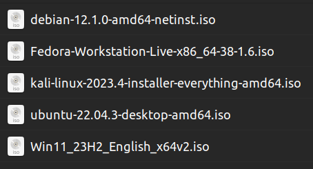

CLICK HERE FOR FREE COURSES
Everyone has the right to freedom of thought.
___________________________________________________________
FIND BOOTABLE MEDIA SUCH AS
A BLANK DVD, A USB FLASH DRIVE, OR AN SD CARD
___________________________________________________________
___________________________________________________________
DOWNLOAD THE ISO FILE
___________________________________________________________

Here is a list of ISOs to choose from
ISO FILES
___________________________________________________________
FLASH/WRITE THE ISO TO BOOTABLE MEDIA USING YOUR PROGRAM OF CHOICE
___________________________________________________________
Here is a list of programs you can use
PROGRAM LIST
HERE IS HOW YOU USE THEM
___________________________________________________________
FIND YOUR BOOT MENU KEY OR UEFI/BIOS MENU
& BOOT FROM THE MEDIA YOU'VE JUST CREATED
___________________________________________________________
___________________________________________________________
INSTALL OS
___________________________________________________________
INSTALLATION INSTRUCTIONS
___________________________________________________________
VIRTUAL MACHINES
___________________________________________________________
Here is a list of programs you can use
Virtualbox
vmware
Virtual Machine Manager
Boxes
Use This